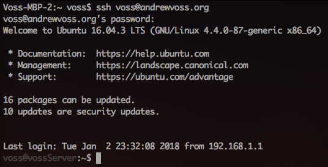
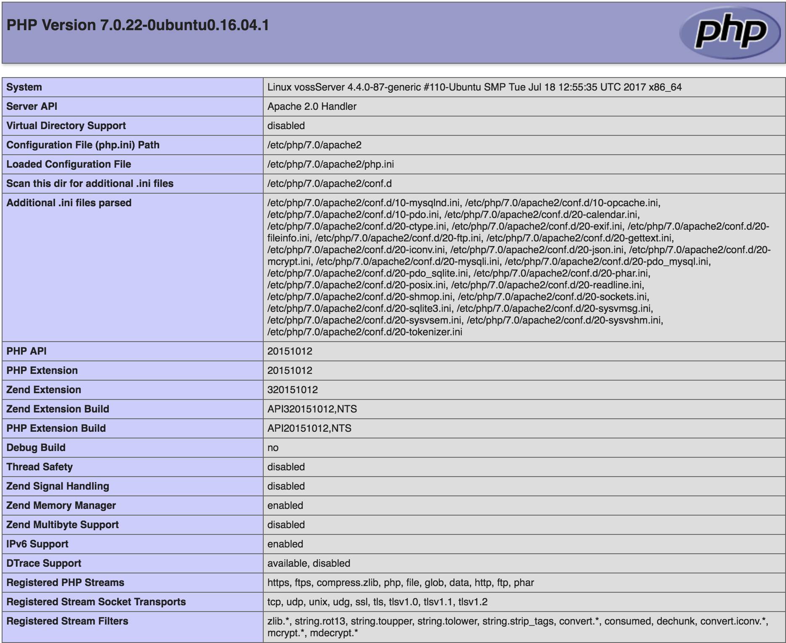
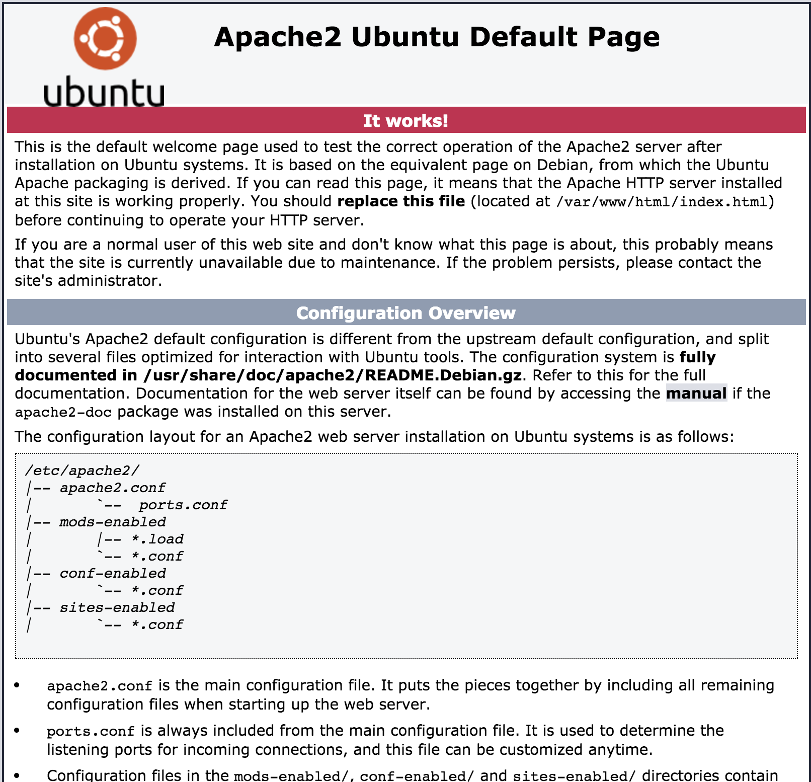

Server
  This page about a project I started called "Server". You can access the git repository for this project by going to https://github.com/avoss19/Server. This project was created to host websites for Benilde-St. Margaret's students. Currently, there is only one other student and I who are involved in the project, but I am looking to expand.
I got the idea for this project one day while I was browsing through craigslist and noticed a server for less than $100. I thought to myself that it would be a great place to start for hosting a domain or service. Then I remembered that my engineering class that I am taking requires us to create a portfolio for our last assignment. I thought that this server would be a great way for my friends and I to host our website without having any restrictions on our customizable to our site.
This was one of my most challenging projects of my junior year in high school. It forced me to learn a plethora of things. Some of the things it forced me to learn were HTML, CSS, Javascript, more bash, how to use server equipment, and more about Linux. After the purchase of the server, my first task was learning some HTML, CSS, and Javascript for the site that I would be hosting. I learned most of it from a website called https://w3schools.com. I thought this website was very helpful and though for what I wanted to accomplish, and if the website didn't have what I wanted to learn I would go to https://stackoverflow.com. I also learned some bash from StackOverflow for a script to run on the server updates the website to be live with the "master" branch on my GitHub repository. Another thing I learned was how to use server equipment. It took hours of troubleshooting to get the server to boot for the first time. The first day of working the server it took 3 hours for me to figure out how to clear the CMOS and get the OS (operating system) to recognize a drive. I finally figured out that I could just change the position of a jumper to clear the CMOS and that I had to initialize the hard drive through the raid controller. I thought that utilizing the hard drive through the raid controller was counter-intuitive due to the hard drive bay being hot swappable. Another thing I learned was the Unix permission structure, I had to learn about this to make this project successful because I didn't want other students to be able to have control over my network or the entire server.